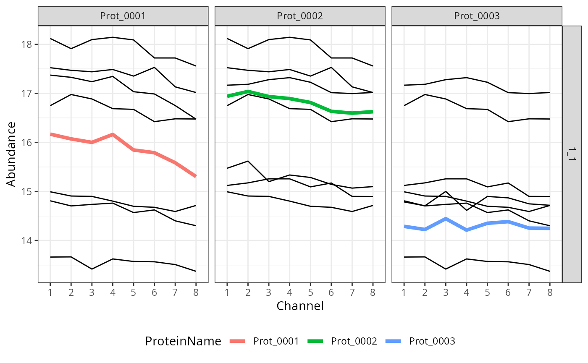

Protein Quantification with Shared Peptides: Workflow
shared_workflow.RmdIntroduction: statistical model
We will illustrate the proposed workflow for summarization of sets of proteins with shared peptides.
Let us consider a group of \(K\)
proteins that share peptides. For each spectral Feature \(f\) we define the following set: \[\begin{equation*}
V(f) = \{k \in 1, \ldots, K: \text{ Feature f matches to Protein
k}\}
\end{equation*}\] We propose the following model for
summarization: \[\begin{multline}
X_{cf} = \mu + \sum_{k \in V(f)}Weight_{fk}\left(Protein_k +
Channel_{kc}\right) + Feature_{f} + \varepsilon_{cf}, \\
\forall_k \sum_{c = 1}^{C}Channel_{kc} = 0, \sum_{k =
1}^{K}Protein_k = 0, \sum_{f = 1}^{F} Feature_{f} = 0,
\mathbb{E}\varepsilon_{cf} = 0, \varepsilon_{cf}\, iid
%\stackrel{iid}{\sim} \mathcal{N}(0, \sigma^2)
\end{multline}\] subject to the following constraints: \[\begin{eqnarray*}
\forall_{f} \sum_{k \in V(k)}Weight_{fk} &= 1, \\
\forall_{f, k} Weight_{fk} &\geq 0,
\end{eqnarray*}\] where \(X_{cf}\) denotes the log-intensity of
Feature \(f\) in Channel \(c\), \(Feature_{f}\) is a fixed effect associated
with spectral features and \(\varepsilon_{cf}\) denotes random error. As
the model is fitted for each Run \(mt\)
separately, indices \(f\) and \(c\) should be understood as \(f(mt)\) and \(c(mt)\), respectively. The sum of effects
\(\mu + Protein_k + Channel_{kc}\)
describes the abundance of protein \(k\) in channel \(c\). Parameter \(Protein_k\) describes the baselines
abundance of \(k-th\) protein, while
the term \(Channel_{kc}\) allows us to
model the shape of protein-level profile. Thus, protein-level summary
for protein \(k\) in Run \(mt\) is given by \(\widehat{Y}_{kc} = \hat{\mu} +
\widehat{Protein}_{k} + \widehat{Channel}_{kc}\). Statistical and
implementation details can be found in accompying paper (see
citation("MSstatsWeightedSummary")). In short, the model is
fitted for each cluster of proteins separately via an iterative
procedure which alternates between fixing Weights and estimating other
effects, and estimating Weights while holding other parameters
fixed.
Protein summarization workflow
First, let us load the required packages:
library(MSstatsWeightedSummary)
library(ggplot2)
library(data.table)
library(MSstatsTMT)Input format and example data
We will use the following simulated data set as an example:
data(simulated_dataset)
head(simulated_dataset)
#> ProteinName PeptideSequence Charge PSM Run Mixture TechRepMixture
#> <fctr> <char> <num> <char> <fctr> <fctr> <fctr>
#> 1: Prot_0001 P11 1 P11_1 1_1 1 1
#> 2: Prot_0001 P11 1 P11_1 1_1 1 1
#> 3: Prot_0001 P11 1 P11_1 1_1 1 1
#> 4: Prot_0001 P11 1 P11_1 1_1 1 1
#> 5: Prot_0001 P11 1 P11_1 1_1 1 1
#> 6: Prot_0001 P11 1 P11_1 1_1 1 1
#> Channel BioReplicate Condition Log2Intensity Intensity IsUnique
#> <fctr> <fctr> <fctr> <num> <num> <lgcl>
#> 1: 8 1_1 8 16.47425 91042.57 TRUE
#> 2: 7 1_1 7 16.75157 110338.30 TRUE
#> 3: 6 1_1 6 16.98772 129961.28 TRUE
#> 4: 5 1_1 5 17.03397 134194.66 TRUE
#> 5: 1 1_1 1 17.37219 169648.74 TRUE
#> 6: 2 1_1 2 17.32688 164403.55 TRUE
#> log2IntensityNormalized AbundanceStandard
#> <num> <num>
#> 1: 16.47425 -0.59205067
#> 2: 16.75157 -0.31473021
#> 3: 16.98772 -0.07858202
#> 4: 17.03397 -0.03233669
#> 5: 17.37219 0.30588675
#> 6: 17.32688 0.26057756This data set contains some additional columns. Required input consists of the same columns as MSstatsTMT format: ProteinName, PeptideSequence, Charge, PSM, Run, Channel, Intensity, Condition, BioReplicate, Mixture, TechRepMixture.
required_input = simulated_dataset[, .(ProteinName, PeptideSequence, Charge, PSM, Run,
Channel, Intensity, Condition, BioReplicate,
Mixture, TechRepMixture)]
head(required_input)
#> ProteinName PeptideSequence Charge PSM Run Channel Intensity Condition
#> <fctr> <char> <num> <char> <fctr> <fctr> <num> <fctr>
#> 1: Prot_0001 P11 1 P11_1 1_1 8 91042.57 8
#> 2: Prot_0001 P11 1 P11_1 1_1 7 110338.30 7
#> 3: Prot_0001 P11 1 P11_1 1_1 6 129961.28 6
#> 4: Prot_0001 P11 1 P11_1 1_1 5 134194.66 5
#> 5: Prot_0001 P11 1 P11_1 1_1 1 169648.74 1
#> 6: Prot_0001 P11 1 P11_1 1_1 2 164403.55 2
#> BioReplicate Mixture TechRepMixture
#> <fctr> <fctr> <fctr>
#> 1: 1_1 1 1
#> 2: 1_1 1 1
#> 3: 1_1 1 1
#> 4: 1_1 1 1
#> 5: 1_1 1 1
#> 6: 1_1 1 1There are three proteins in this data set. Each protein has one unique peptide and shares multiple peptide with every other protein.
Finding protein clusters
If output of signal processing tools lists all proteins that match to
a given protein, data should be converted to a format where each row
corresponds to a single observation of intensity by Protein, PSM, Run
and Channel. This means that shared peptides will appear multiple times
in the PSM table, once for each matching protein. If the output only
lists a single protein, adjustProteinAssignments function
can be used to add all candidate proteins via sequence matching. The
example data set already includes all possiblities.
This package provides tools for finding connected components of the
peptide-protein graph. Functions createPeptideProteinGraph
and addClusterMembership can be used to annotate the data
set with IDs of protein clusters, as illustrated below.
pp_graph = createPeptideProteinGraph(required_input)
required_input = addClusterMembership(required_input, pp_graph)
unique(required_input[, .(Cluster, ProteinName)])
#> Key: <ProteinName>
#> Cluster ProteinName
#> <int> <char>
#> 1: 1 Prot_0001
#> 2: 1 Prot_0002
#> 3: 1 Prot_0003Functions getClusterStatistics and
plotClusterStats can be used to calculate and visualize
additional summary statistics such as counts of unique and shared
peptides in each cluster.
Normalization
In the format with duplicated rows for shared peptides, normalization
requires care. To ensure that each feature intensity is used only once
for normalization, we provide a function called
normalizeSharedPeptides. This function performs
feature-level normalization of data previously implemented in MSstatsTMT
package. As a result, a column called
log2IntensityNormalized is added to the data.
head(simulated_dataset[, .(ProteinName, PSM, Run, Channel, log2IntensityNormalized)])
#> ProteinName PSM Run Channel log2IntensityNormalized
#> <fctr> <char> <fctr> <fctr> <num>
#> 1: Prot_0001 P11_1 1_1 8 16.47425
#> 2: Prot_0001 P11_1 1_1 7 16.75157
#> 3: Prot_0001 P11_1 1_1 6 16.98772
#> 4: Prot_0001 P11_1 1_1 5 17.03397
#> 5: Prot_0001 P11_1 1_1 1 17.37219
#> 6: Prot_0001 P11_1 1_1 2 17.32688Summarization
Protein-level summarization is the main functionality of this
package. We extend the MSstatsTMT workflow by jointly estimating the
abundance of all proteins in a given protein cluster. This is done via
an iterative procedure implemented in the
getWeightedProteinSummary function. This function requires
following input:
-
feature_data: input data in MSstatsTMT format. If columnsClusterandlog2IntensityNormalizedare not provided, clusters will be computed and the log-intensity column will be added under the assumption that intensities have been normalized, -
norm: norm for the residuals (objective function): can be equal to “Huber” (Huber norm/loss) or “p_norm” (p-norm). -
norm_parameter: value of p parameter (fornorm= “p_norm”) or M parameter of Huber loss (fornorm= “Huber”). -
weights_mode: “contributions” or “probabilities”. The former option constraints feature-protein weights to be non-negative and sum to 1 for each feature, the latter option removes the “sum to 1” condition, instead restricting weights to [0, 1] interval. Defaults to “contributions”. -
tolerance: tolerance for differences between weights in the iterative procedure. -
max_iter: maximum number of iterations of the iterative fitting algorithm. -
save_weights_history: if TRUE, weights from each iteration will be included in the output. -
save_convergence_history: if TRUE, differences between weights from consecutive iterations will be included in the output.
summary = getWeightedProteinSummary(simulated_dataset, norm = "Huber",
norm_parameter = 0.1,
max_iter = 30)Output of this function is an object of class “MSstatsWeightedSummary”. The next section explains how to access elements of this object.
Two additional functions are provided for users who require more
customized workflow. Function getPeptideProteinWeights
calculates feature-protein weights for a given combination of
protein-level summary and feature-level data, while
summarizeProteinsClusterSingleRun estimates protein-level
data for a given set of weights and data from a single MS run.
Diagnostics and plotting
Output of the getWeightedProteinSummary function is an
extension of the output of proteinSummarization from
MSstatsTMT. It includes the following elements:
- feature-level (input) data accessed with
featureDatafunction, - protein-level (summary) data accessed with
proteinDatafunction, - final feature-protein weights accessed with
featureWeightsfunction, - information about convergence of the algorithm accessed with
convergenceSummaryfunction, - optional history of convergence accessed with
convergenceHistoryfunction, - optional history of weights accessed with
weightsHistoryfunction.
head(featureData(summary)) # feature-level input data
#> ProteinName PeptideSequence Charge PSM Channel Intensity Run Condition
#> <char> <char> <num> <char> <fctr> <num> <fctr> <fctr>
#> 1: Prot_0001 P11 1 P11_1 8 91042.57 1_1 8
#> 2: Prot_0001 P11 1 P11_1 7 110338.30 1_1 7
#> 3: Prot_0001 P11 1 P11_1 6 129961.28 1_1 6
#> 4: Prot_0001 P11 1 P11_1 5 134194.66 1_1 5
#> 5: Prot_0001 P11 1 P11_1 1 169648.74 1_1 1
#> 6: Prot_0001 P11 1 P11_1 2 164403.55 1_1 2
#> BioReplicate Mixture TechRepMixture log2IntensityNormalized Cluster
#> <fctr> <fctr> <fctr> <num> <char>
#> 1: 1_1 1 1 16.47425 1__1_1
#> 2: 1_1 1 1 16.75157 1__1_1
#> 3: 1_1 1 1 16.98772 1__1_1
#> 4: 1_1 1 1 17.03397 1__1_1
#> 5: 1_1 1 1 17.37219 1__1_1
#> 6: 1_1 1 1 17.32688 1__1_1
head(proteinData(summary)) # output summary
#> Key: <Run, Channel>
#> Run Channel Protein Abundance Mixture TechRepMixture Condition
#> <fctr> <char> <char> <num> <fctr> <fctr> <fctr>
#> 1: 1_1 1 Prot_0001 16.16886 1 1 1
#> 2: 1_1 1 Prot_0002 16.94093 1 1 1
#> 3: 1_1 1 Prot_0003 14.28871 1 1 1
#> 4: 1_1 2 Prot_0001 16.07184 1 1 2
#> 5: 1_1 2 Prot_0002 17.03870 1 1 2
#> 6: 1_1 2 Prot_0003 14.22520 1 1 2
#> BioReplicate
#> <fctr>
#> 1: 1_1
#> 2: 1_1
#> 3: 1_1
#> 4: 1_1
#> 5: 1_1
#> 6: 1_1
featureWeights(summary, shared_only = TRUE) # Weights
#> ProteinName PSM Run Weight IsUnique
#> <char> <char> <fctr> <num> <lgcl>
#> 1: Prot_0001 PS1Prot0001Prot0002Prot0003_1 1_1 0.0000000 FALSE
#> 2: Prot_0002 PS1Prot0001Prot0002Prot0003_1 1_1 1.0000000 FALSE
#> 3: Prot_0003 PS1Prot0001Prot0002Prot0003_1 1_1 0.0000000 FALSE
#> 4: Prot_0001 PS1Prot0001Prot0002_1 1_1 0.3905934 FALSE
#> 5: Prot_0002 PS1Prot0001Prot0002_1 1_1 0.6094066 FALSE
#> 6: Prot_0001 PS1Prot0001Prot0003_1 1_1 0.5848836 FALSE
#> 7: Prot_0003 PS1Prot0001Prot0003_1 1_1 0.4151164 FALSE
#> 8: Prot_0002 PS1Prot0002Prot0003_1 1_1 0.5508112 FALSE
#> 9: Prot_0003 PS1Prot0002Prot0003_1 1_1 0.4491888 FALSE
#> 10: Prot_0001 PS2Prot0001Prot0002Prot0003_1 1_1 0.0000000 FALSE
#> 11: Prot_0002 PS2Prot0001Prot0002Prot0003_1 1_1 0.7402802 FALSE
#> 12: Prot_0003 PS2Prot0001Prot0002Prot0003_1 1_1 0.2597198 FALSE
#> 13: Prot_0001 PS2Prot0001Prot0002_1 1_1 0.4577356 FALSE
#> 14: Prot_0002 PS2Prot0001Prot0002_1 1_1 0.5422644 FALSE
#> 15: Prot_0001 PS2Prot0001Prot0003_1 1_1 0.3429757 FALSE
#> 16: Prot_0003 PS2Prot0001Prot0003_1 1_1 0.6570243 FALSE
#> 17: Prot_0002 PS2Prot0002Prot0003_1 1_1 0.5983119 FALSE
#> 18: Prot_0003 PS2Prot0002Prot0003_1 1_1 0.4016881 FALSE
convergenceSummary(summary)
#> Cluster Run NumIterations FinalDiffValue tolerance Converged
#> <char> <char> <int> <num> <num> <lgcl>
#> 1: 1__1_1 1_1 7 0.09036566 0.1 TRUESummary can be plotted for a given cluster or set of proteins using
plotSummary function.
plotSummary(summary, cluster = "1__1_1")
It is also possible to obtain protein cluster information via
proteinClusters function.
MSstatsTMT workflow
Function makeMSstatsTMTInput can be used to convert
output of summarization to a format suitable for use with the
groupComparisonTMT function. Optional parameter
msstatstmt_output can be provided to merge output of
proteinSummarization with shared peptides-based
summary.
Currently, since protein-level normalization is done in the proteinSummarization step of MSstats workflow, it is not possible to use “Norm” Channel to jointly normalize output of unique-peptide based summarization (done with MSstatsTMT) and cluster summarization (done with MSstatsWeightedSummary) using functionalities of either of the packages. We intend to add this feature in the future.
gc_input = makeMSstatsTMTInput(summary)
str(gc_input)
#> List of 2
#> $ FeatureLevelData:Classes 'data.table' and 'data.frame': 168 obs. of 13 variables:
#> ..$ ProteinName : chr [1:168] "Prot_0001" "Prot_0001" "Prot_0001" "Prot_0001" ...
#> ..$ PeptideSequence : chr [1:168] "P11" "P11" "P11" "P11" ...
#> ..$ Charge : num [1:168] 1 1 1 1 1 1 1 1 1 1 ...
#> ..$ PSM : chr [1:168] "P11_1" "P11_1" "P11_1" "P11_1" ...
#> ..$ Channel : Factor w/ 8 levels "1","2","3","4",..: 8 7 6 5 1 2 3 4 1 2 ...
#> ..$ Intensity : num [1:168] 91043 110338 129961 134195 169649 ...
#> ..$ Run : Factor w/ 1 level "1_1": 1 1 1 1 1 1 1 1 1 1 ...
#> ..$ Condition : Factor w/ 8 levels "1","2","3","4",..: 8 7 6 5 1 2 3 4 1 2 ...
#> ..$ BioReplicate : Factor w/ 1 level "1_1": 1 1 1 1 1 1 1 1 1 1 ...
#> ..$ Mixture : Factor w/ 1 level "1": 1 1 1 1 1 1 1 1 1 1 ...
#> ..$ TechRepMixture : Factor w/ 1 level "1": 1 1 1 1 1 1 1 1 1 1 ...
#> ..$ log2IntensityNormalized: num [1:168] 16.5 16.8 17 17 17.4 ...
#> ..$ Cluster : chr [1:168] "1__1_1" "1__1_1" "1__1_1" "1__1_1" ...
#> ..- attr(*, ".internal.selfref")=<externalptr>
#> ..- attr(*, "index")= int(0)
#> .. ..- attr(*, "__Cluster")= int(0)
#> $ ProteinLevelData:Classes 'data.table' and 'data.frame': 24 obs. of 8 variables:
#> ..$ Run : Factor w/ 1 level "1_1": 1 1 1 1 1 1 1 1 1 1 ...
#> ..$ Channel : chr [1:24] "1" "1" "1" "2" ...
#> ..$ Protein : chr [1:24] "Prot_0001" "Prot_0002" "Prot_0003" "Prot_0001" ...
#> ..$ Abundance : num [1:24] 16.2 16.9 14.3 16.1 17 ...
#> ..$ Mixture : Factor w/ 1 level "1": 1 1 1 1 1 1 1 1 1 1 ...
#> ..$ TechRepMixture: Factor w/ 1 level "1": 1 1 1 1 1 1 1 1 1 1 ...
#> ..$ Condition : Factor w/ 8 levels "1","2","3","4",..: 1 1 1 2 2 2 3 3 3 4 ...
#> ..$ BioReplicate : Factor w/ 1 level "1_1": 1 1 1 1 1 1 1 1 1 1 ...
#> ..- attr(*, ".internal.selfref")=<externalptr>
#> ..- attr(*, "sorted")= chr [1:2] "Run" "Channel"
#> ..- attr(*, "index")= int(0)
#> .. ..- attr(*, "__Protein")= int [1:24] 1 4 7 10 13 16 19 22 2 5 ...
# Contrasts matrix
cm = matrix(c(-1, 0, 0, 0, 1, 0, 0, 0,
0, -1, 0, 0, 0, 1, 0, 0,
0, 0, -1, 0, 0, 0, 1, 0,
0, 0, 0, -1, 0, 0, 0, 1),
byrow = TRUE, ncol = 8)
colnames(cm) = as.character(1:8)
row.names(cm) = paste(1:4, "vs", 5:8)
gc_output = groupComparisonTMT(gc_input, cm, use_log_file = FALSE)
#> INFO [2024-09-17 12:03:01] Design: 1 mixture.
#> INFO [2024-09-17 12:03:01] Design: 1 MS run per mixture.
#> INFO [2024-09-17 12:03:01] Design: 1 subject per condition (No biological variation).
#> INFO [2024-09-17 12:03:01] Model fitting for 3 proteins.
#> | | | 0% | |======================= | 33% | |=============================================== | 67% | |======================================================================| 100%
#> INFO [2024-09-17 12:03:01] Testing for 3 proteins:
#> | | | 0% | |======================= | 33% | |=============================================== | 67% | |======================================================================| 100%
gc_output$ComparisonResult
#> Protein Label log2FC SE DF pvalue adj.pvalue
#> <fctr> <char> <num> <num> <num> <num> <num>
#> 1: Prot_0001 1 vs 5 -0.32302748 NaN 0 NaN NaN
#> 2: Prot_0001 2 vs 6 -0.28129458 NaN 0 NaN NaN
#> 3: Prot_0001 3 vs 7 -0.41480253 NaN 0 NaN NaN
#> 4: Prot_0001 4 vs 8 -0.85946263 NaN 0 NaN NaN
#> 5: Prot_0002 1 vs 5 -0.12743993 NaN 0 NaN NaN
#> 6: Prot_0002 2 vs 6 -0.40505177 NaN 0 NaN NaN
#> 7: Prot_0002 3 vs 7 -0.33734986 NaN 0 NaN NaN
#> 8: Prot_0002 4 vs 8 -0.26747381 NaN 0 NaN NaN
#> 9: Prot_0003 1 vs 5 0.06348433 NaN 0 NaN NaN
#> 10: Prot_0003 2 vs 6 0.16007991 NaN 0 NaN NaN
#> 11: Prot_0003 3 vs 7 -0.19260057 NaN 0 NaN NaN
#> 12: Prot_0003 4 vs 8 0.03574476 NaN 0 NaN NaN
#> issue
#> <char>
#> 1: SingleMeasurePerCondition
#> 2: SingleMeasurePerCondition
#> 3: SingleMeasurePerCondition
#> 4: SingleMeasurePerCondition
#> 5: SingleMeasurePerCondition
#> 6: SingleMeasurePerCondition
#> 7: SingleMeasurePerCondition
#> 8: SingleMeasurePerCondition
#> 9: SingleMeasurePerCondition
#> 10: SingleMeasurePerCondition
#> 11: SingleMeasurePerCondition
#> 12: SingleMeasurePerCondition